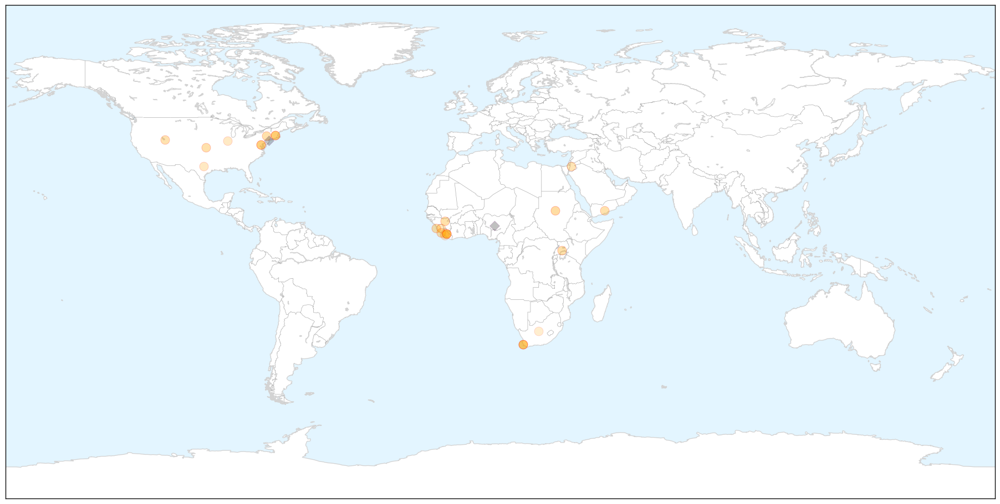

Ebola
30-Day Web Trend
0 alerts, 0 warnings

30-Day Twitter Trend
0 alerts, 0 warnings

Article Locations

X

Article Confidences

Top Articles:
- 1.000
- Predictions of a U.S. epidemic didn’t come true.
- 1.000
- CDC says people at high risk for Ebola should stay home
- 1.000
- Africa - News and Analysis
- 0.999
- Lessons Learned from Ebola Shared at Consortium Symposium
- 0.999
- Statement on the 7th meeting of the IHR Emergency Committee regarding the Ebola outbreak in West Africa
- 0.998
- WHO Hopeful that Ebola’s End Nears
- 0.996
- UMMS, academic partners awarded $20 million CDC grant to prevent ebola outbreak in Liberia
- 0.994
- Thanks Obama! Ebola down from 100 to 10 new cases a day in Liberia
- 0.981
- Experimental Ebola Treatments Are Ethical, U.N. Says
- 0.975
- UMass Medical School receives $20 million grant to help prevent another Ebola outbreak in Liberia
- 0.964
- Ebola response, U.S. human rights record
- 0.945
- Utah Business
- 0.940
- Liberian President Hopes To Build On Seattle Foundations' Ebola Help
- 0.894
- China-Africa health forum adopts Cape Town Declaration - Xinhua
- 0.875
- PRESIDENT SIRLEAF UNDERSCORES THE IMPORTANCE OF WATER AND SANITAION
- 0.872
- China committed to building 100 health facilities in Africa - Motsoaledi
- 0.809
- Ebola 1st case in the US
- 0.777
- "We have come a long way"-President Koroma
- 0.774
- Ebola countdown : President Ernest Koroma expresses hope
- 0.714
- China, Africa agree on building resilient public health system - Xinhua
- 0.703
- Ebola nurse Nina Pham’s lawsuit against Texas Health Resources will continue
- 0.677
- Emory Given Grant To Study Spread Of Infections In Hospitals
- 0.632
- Australian Red Cross aid workers awarded Florence Nightingale Medals
- 0.588
- So Little But So Much: BESTWA Thrives Amid the Odds
- 0.572
- MOH, Partners Recognize Media’s Role in Improving Health Sector
- 0.569
- Australian Red Cross aid workers awarded Florence Nightingale Medals
- 0.566
- China committed to building 100 health facilities in Africa:Tuesday 6 October 2015
Top Tweets:
- 0.806
- Ebola nurse Nina Pham's lawsuit against Texas Health Resources will continue - Dallas Morning News (blog) http://t.co/5PMclJC5Ud ebola EVD
- 0.782
- What We Learned From the Ebola Epidemic - Huffington Post http://t.co/7U4UVrIEJb ebola EVD
- 0.760
- Women too afraid to visit maternity facilities during Ebola outbreak - Medical News Today http://t.co/AIaZjAl1dJ ebola EVD
- 0.741
- RT: No new health worker Ebola virus infections or deaths reported by for about 5 weeks http://t.co/TuxfSQ8dK0
- 0.740
- How The Times Covered the Ebola Epidemic - New York Times http://t.co/INP7BDDxhm ebola EVD
- 0.715
- .@CDCFound brought together partners at a key moment to support and extend CDC work in West Africa Ebola response.
- 0.708
- RT: Nearly 1/3 more SierraLeone women died for refusing 2 rpt 2 health facilities fearing Ebola new rpt by Liverpool Sch of…
- 0.641
- .@CDCFound resources playing a crucial role in West Africa Ebola response allowing CDC to be fast and flexible in the RoadtoZero.
- 0.611
- Would an Ebola Vaccine Move Regeneron Pharmaceuticals' Bottom Line? - Motley Fool http://t.co/9sBC60wdoc ebola EVD
- 0.601
- America's Ebola Panic - Slate Magazine http://t.co/DBsz3aiB4F ebola EVD
- 0.599
- 200 Ebola Survivors Train in Entrepreneurship - Liberian Daily Observer http://t.co/FuVmrIeJiO ebola EVD
Influenza
30-Day Web Trend
6 alerts, 5 warnings

30-Day Twitter Trend
0 alerts, 0 warnings

Article Locations


Article Confidences

Top Articles:
- 0.999
- October Marks Start Of Flu Season
- 0.998
- Doctors anticipate nasty flu season
- 0.997
- Flu Shots Keep People Out of Hospital
- 0.997
- Flu-associated pneumonia tied to skipped flu vaccine
- 0.986
- What you need to know about this year's flu vaccine
- 0.981
- Seasonal illness on the rise, wash your hands
- 0.980
- FDA Clears the Focus Diagnostics Simplexa™ Flu A/B & RSV Direct Test to Include 53 New Virus Strains for the 2015-2016 Flu Season
- 0.978
- Flu Vaccine Helps Reduce Hospitalizations Due to Influenza Pneumonia
- 0.960
- Focus Diagnostics receives FDA clearance for flu, RSV test
- 0.958
- Get flu vaccine now, says Luxembourg's Health Ministry
- 0.955
- News Scan for Oct 06, 2015
- 0.940
- Studies Find Flu Vaccines Can Harm Your Heart, Infant And Fetus
- 0.925
- Flu Season Begins: Authorities Predict a Tough One
- 0.904
- Flu vaccine expected to be more effective this year
- 0.885
- Today's stories from newspapers in North Bay Nipissing
- 0.881
- Summit, Apache County Public Health offering free flu shots
- 0.872
- Howell County Health Department to host flu shot clinics –
- 0.776
- Nurse Flu Shot Compliance Reverberates Through Community
- 0.751
- October 6, 2015 Archives
- 0.751
- October 6, 2015 Archives
- 0.716
- Tough lessons learned from bird flu outbreak
- 0.584
- Today's stories from newspapers in Halton Hills
- 0.547
- New flu mapping system developed by Valley ER doctor
Top Tweets:
-
No tweets found for Oct 06, 2015